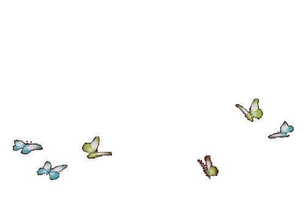

you’ve made it to the next part of this website. there are so many things i want to say to you, but there is no time to get through it all, but one thing is for sure – you’ve turned my life completely around.
i see you in all of my favorite things. every time i listen to music, watch romance movies, or stumble across love-poems, i can’t help but think of you. every activity gains an extra layer of joy when i imagine you by my side, laughing, and sharing the excitement. i can’t help but think how much happier these moments would be if you were physically here with me. the idea of us being together adds a special kind of magic to everything, turning ordinary moments to extraordinary memories.
even though you’re always with me spiritually, i can’t wait for us to finally meet, there are countless things i crave to experience with you, and being together physically would open the door to endless opportunities for me to express my truest love for you, my goal has always been to make you the happiest person alive, and i will do everything to achieve this.
being with you made me feel so many things i have never felt before. a true genuine love with no boundaries, something i never believed to exist, but you proved me wrong in the best possible way. i think that distance is one of the toughest things a relationship can go through, but everything happens for a reason, i guess the reason for the distance between us is so we can go stronger, it’s also like a little reminder that our connection goes beyond being physically close, it shows how strong our love is and how committed we are to each other. what we have is special and irreplaceable, i wouldn’t trade this love for anything else in this world. there are no barriers to our love, not even the furthest distance can separate us.
i want you to know that every word comes from the depths of my heart, i’ll forever make sure to provide you with my full affection until the end of our lives. now, continue with the bear to read the next letter!
